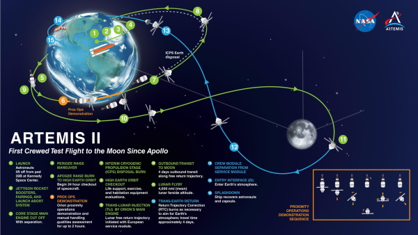
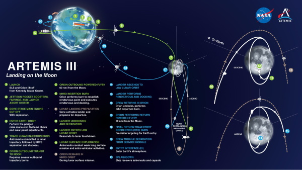

Après le succes de ArtémisI la suite est plus que demarrer avec d'autre projet t'elle que ArtémisII et ArtémisIII.
On retrouve aussi des ellement t'elle que la station gateway.
ArtémisII enverra un équipage d'astronautes dans l'orbite lunaire sans pour autont fouler le sol lunaire. Cette étape sert aussi a déployer des element pour les futurs mission.
ArtémisIII sera un moment historique puisque l'homme refera son apparition sur le sol lunaire grace au starship.
Pour plus d'information a propos du déroulement de ces phase se referer aux shémas.

